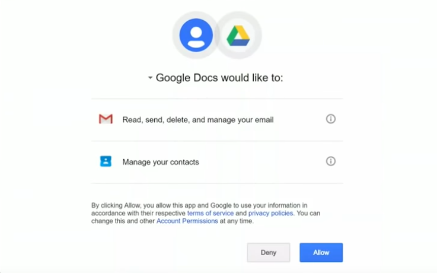

Nowadays modern web applications may implement or use OAuth 2.0 for there own services. In this post we will understand how OAuth 2.0 works and how it can present vulnerabilities.
TL;DR
OAuth 2.0 is an authorization framework defines a set of protocols that allow an application (Client) to obtain authorization grants (permissions) from Authorization-Server for certain resources/actions of a Resource-Owner from the Resource-Server.
Terminology
Let’s define each actor of an OAuth2.0 framework:
Client: The application accessed by the Resource-Owner that would like to obtain authorization grants (permissions) from Authorization-Server.Authorization-Server: The centralized server responsible to give authorization grants (permissions) to the client after the the Resource-Owner approve for that.Resource-Owner: The end-user who will consent to permissions and authenticate.Resource-Server: The server that provide API services to the CLient for certain resources/actions of a Resource-Owner.
Specifications
OAuth2.0 provides 4 protocols of authorization flows:
- Authorization Code
- Resource Owner Password Credentials
- Implicit
- Client Credentials
JWT (JSON Web Token)
JWT play an important part in OAuth 2.0. Because the Client use JWT token to authenticate with the Resource-Server in order to use it’s API.
Depending of the The authorization flows being used, the Authorization-Server provide the Client with two types of Tokens: Access Token and Refresh Token. Anyone with a valid Access Token can access protected resources; usually it is short-lived. When an Access Token expires, developers can use an optional Refresh Token to request a new Access Token without having to ask the Resource-Owner to enter their credentials again.
Authorization Code
In this post we only cover Authorization Code, since it’s mostly widely use for common OAuth 2.0 :
Step 1
The Resource-Owner (user) will ask for connecting his external account (facebook, twitter, etc…) using OAuth 2.0 with the his current account on the Client web applications his using it !
So next time, the Resource-Owner (user) can use his second account (e.g. facebook) to connect to the web application.
Step 2
The Client will prepare a link for the Resource-Owner to visit the Authorization-Server’s /auth endpoint (facebook, twitter, etc…) with pre-defined parameters that allows the authorization server to identify and respond to the client.
<form action="Authorization-Server/auth" method="GET">
<input type="hidden" name="response_type", value="code"/>
<input type="text" name="scope", value="read write"/>
<input type="hidden" name="client_id", value=${client_id}/>
<input type="hidden" name="state", value="xyzABC123"/>
<input type="hidden" name="redirect_uri", value="Client/callback"/>
<button type="submit">Connect</button>
</form>
The state token
Step 3
The Resource-Owner will access to the Authorization-Server’s /auth endpoint and enter his credentials to login, then the Authorization-Server will ask the Resource-Owner if he wants to authorize the client to access (read, write) on his account.
<form action="Authorization-Server/auth" method="POST">
<input type="text" name="scope", value="read write"/>
<input type="hidden" name="CSRF", value="EDNQfCgZAubBEso5K7H4QDKQml0"/>
<button type="submit">I Authorize</button>
</form>
Step 4
After the Resource-Owner authenticate and click on I Authorize button, the Authorization-Server will send him back the the client callback (redirect_uri) with the state token and the code temporary token.
<?php
header('Location: http://Client/callback?code=sXlSiABqwsXP9PQL1CR9MjOUm8JCJU&state=xyzABC123');
exit;
?>
Step 5
The Client callback endpoint will be triggered once the Authorization-Server redirect the Resource-Owner to the callback endpoint. The Client will verify the state token and then he will ask for an Access Token from the Authorization-Server.
<?php
// The code token from the callback
$code_token = $_GET['code'];
// Your Client_ID and Client_Secret
$client_id = '920543249955';
$client_secret = 'U7mSUi08f8D2wPvMMrT3ovo3wJdiYR';
// The data to send to the API
$postData = array(
'client_id' => $client_id,
'client_secret' => $client_secret,
'code' => $code_token
);
// Setup cURL
$ch = curl_init('http://Authorization-Server/token');
curl_setopt_array($ch, array(
CURLOPT_POST => TRUE,
CURLOPT_RETURNTRANSFER => TRUE,
CURLOPT_HTTPHEADER => array(
'Content-Type: application/json'
),
CURLOPT_POSTFIELDS => json_encode($postData)
));
// Send the request
$response = curl_exec($ch);
// Check for errors
if($response === FALSE){
die(curl_error($ch));
}
// Decode the response (JWT Tokens)
$responseData = json_decode($response, TRUE);
// JWT Tokens
/*
$responseData = {
"access-token" = "eJy9j8tOAzEMRX8lzbpCeWfcr0CwYIGqynGcNmI6gyYzElLVfyfAEtasrCvfI_vc5KmM2C7c5OH1JsXah7xya3hmuZePI2NjMc5nUSexzgKJ-lKsl9rEe-88yON9_5t74nNt64JrnSfxvH1DZRt34oVHmq8s8LrUbaofu7_5f7l73Hf5hdtFHgqOjXusWR5kdsqQ0Wx8UYVyQgVgPXhXBmtzAI4lYjbKpagSmOIi6QAhFCZnVfQQPGtjw6DJe1aeh1IAsgMgP7D-oklF5bPKCo0KGqIKsZPZ6QGZuge1pZzW-Y2n_g-hNy6jdl-1SIV8Ao9uMNHiEFOyNiaElDu3NV5-JIy8fwJq3pTL.X0mSOA.ctt-kWanNZtvtj6xOw6dKhGvQLY",
"refresh-token" = "eJy9j8tOAzEMRX8lzbpCeWfcr0CwYIGqynGcNmI6gyYzElLVfyfAEtasrCvfI_vc5KmM2C7c5OH1JsXah7xya3hmuZePI2NjMc5nUSexzgKJ-lKsl9rEe-88yON9_5t74nNt64JrnSfxvH1DZRt34oVHmq8s8LrUbaofu7_5f7l73Hf5hdtFHgqOjXusWR5kdsqQ0Wx8UYVyQgVgPXhXBmtzAI4lYjbKpagSmOIi6QAhFCZnVfQQPGtjw6DJe1aeh1IAsgMgP7D-oklF5bPKCo0KGqIKsZPZ6QGZuge1pZzW-Y2n_g-hNy6jdl-1SIV8Ao9uMNHiEFOyNiaElDu3NV5-JIy8fwJq3pTL.X0mOEQ.u2YJBIJMHrTaDTFMoEyQ5hTNCUs"
}
*/
Step 6
The client now have the Access Token of the Resource-Owner, This token is proof that the Resource-Owner did, in fact, authenticate successfully with the Authorization-Server and Authorize to the Client getting read, write permissions on the Resource-Server.
What Could Go Wrong
OAuth Authorization Server CSRF
In Step 3 we mention that there will be a CSRF Token within the Authorize form, this CSRF token will help against CSRF (Cross-Site Request Forgery) attacks. Because the Client can simply craft a request that directly confirms access to the Resource-Owner data. This would skip the Authorization form and grants the Client access to the Resource-Owner data without the confirmation of the corresponding Resource-Owner.
OAuth Consumer CSRF
In Step 2,4 we mention that there will be a State Token within the Authorization-Server’s /auth endpoint and then with the /callback endpoint, this CSRF token will help against CSRF (Cross-Site Request Forgery) attacks. Because an Attacker can simply stop by Step 4 and without visiting the callback link, he can trick the victim (that is currently logged into the client application) to execute the callback request, the victim account and the OAuth2 account of the attacker get connected. The attacker can now login into the client application using his OAuth2 account and can impersonate his victim inside the client application.
OAuth Phishing Attack
If the Authorization-Server is publicly available, the Attacker can create his own Client application with a tricky name and start phishing attack by asking Victims (Resource-Owner) to access to there data with full permissions (read, write, delete, etc..)
